Kazi — practice management for South African law firms. Matters, fee notes, trust accounting, FICA. And your own AI, working on your practice.
The problem
The three worst days of your month
01
The fee-note run
An evening — or three — reconstructing what everyone actually did from timesheets, sticky notes, and memory.
02
The trust reconciliation
An Excel file, a bank statement, and hope the three-way tie works out. If it doesn't, that's a Legal Practice Act problem, not an admin problem.
03
Debtors & FICA
Last month's fee notes, unpaid, with nobody whose job it is to chase them. FICA files that live in a cabinet.
What Kazi is
One system for the firm's back office
Matters & time — everything captured as it happens, not reconstructed at month-end.
Fee notes — drafted from recorded time, in your house style, VAT and contingency caps applied.
Trust accounting — under LPA s86, continuously reconciled.
FICA — a per-client checklist, not a filing cabinet.
Debtors — statements and follow-ups on a schedule, not when someone remembers.
Client portal — clients see matter status and documents; fewer "any update?" calls.
Inside Kazi
Built around an attorney's week
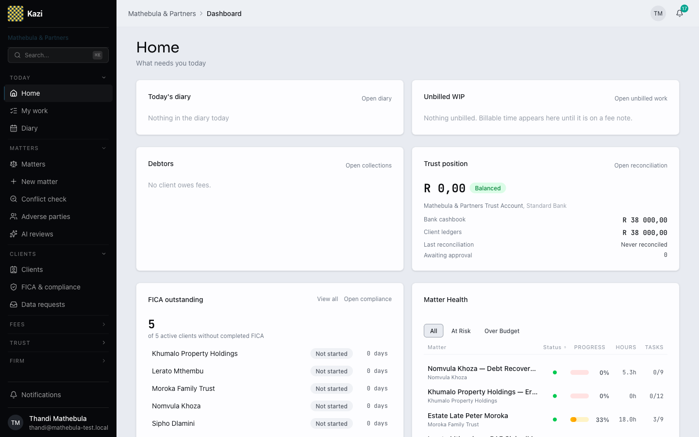
Home · partner: diary, WIP, debtors, trust, FICA
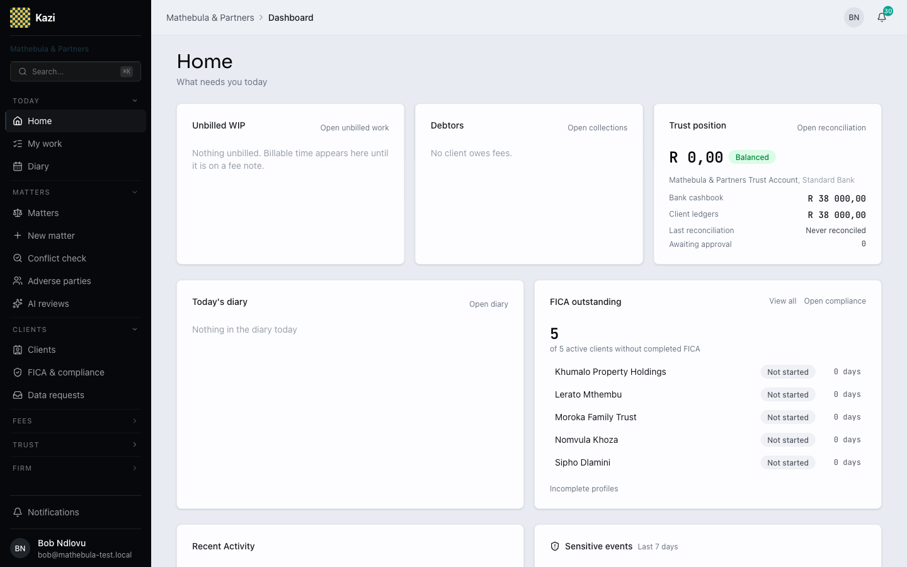
Home · firm admin
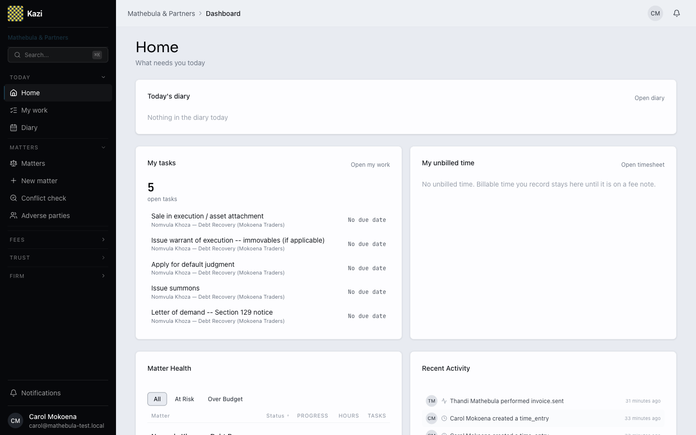
Home · fee earner: my tasks, my time
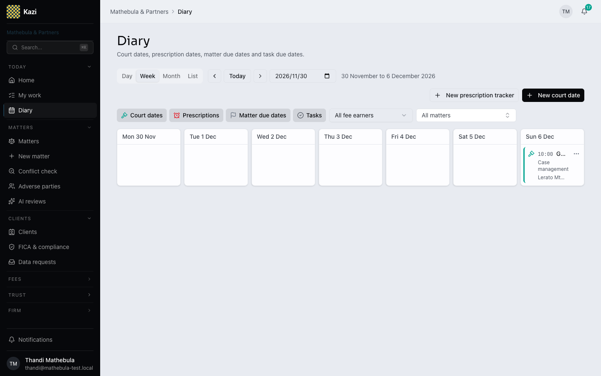
Diary · court dates, prescriptions, due dates
Inside Kazi
Matters and clients at a glance
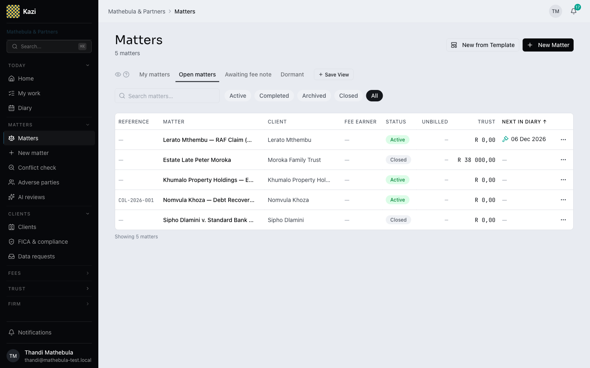
Matters · one dense table
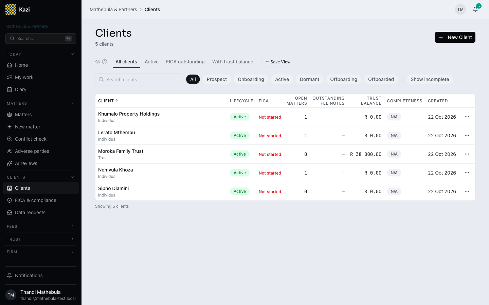
Clients · lifecycle, FICA, trust
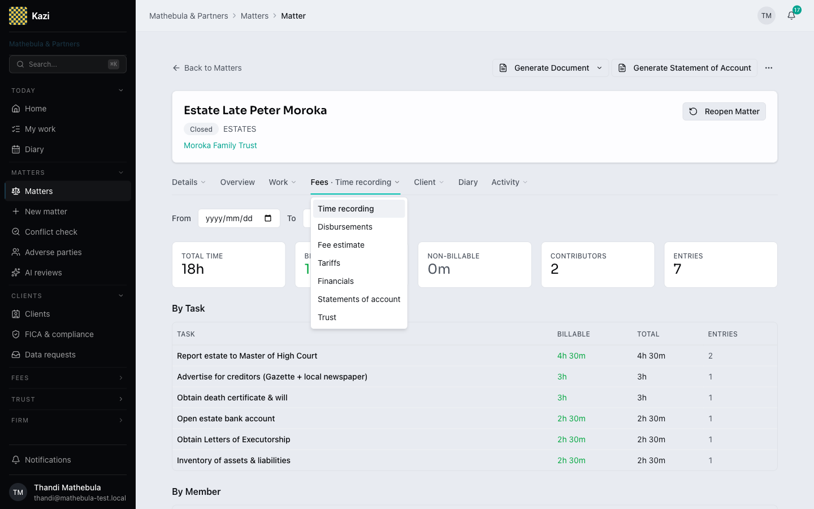
Matter · Fees: time to fee note to trust
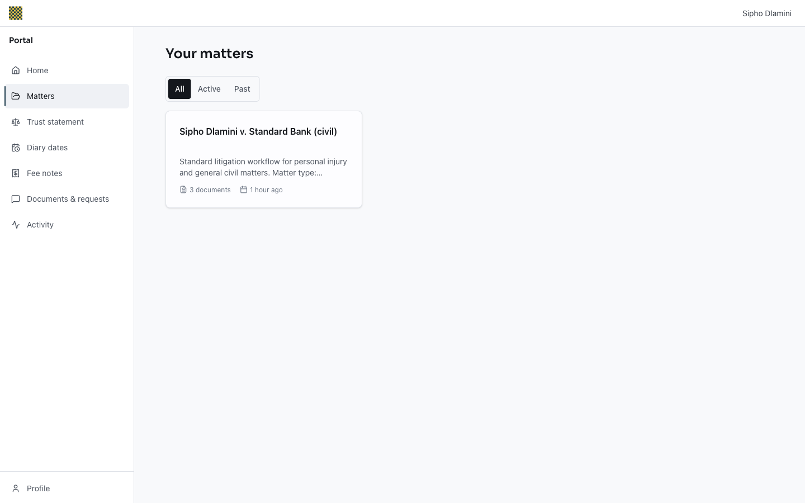
Client portal · the client's matters
Inside Kazi
Settings in five places
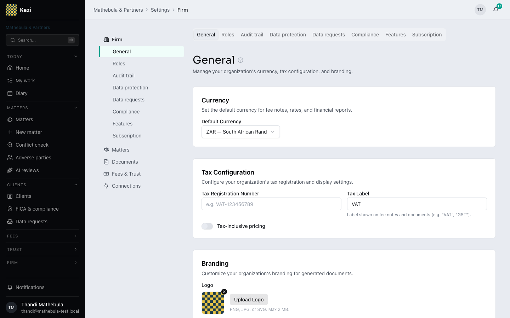
Firm
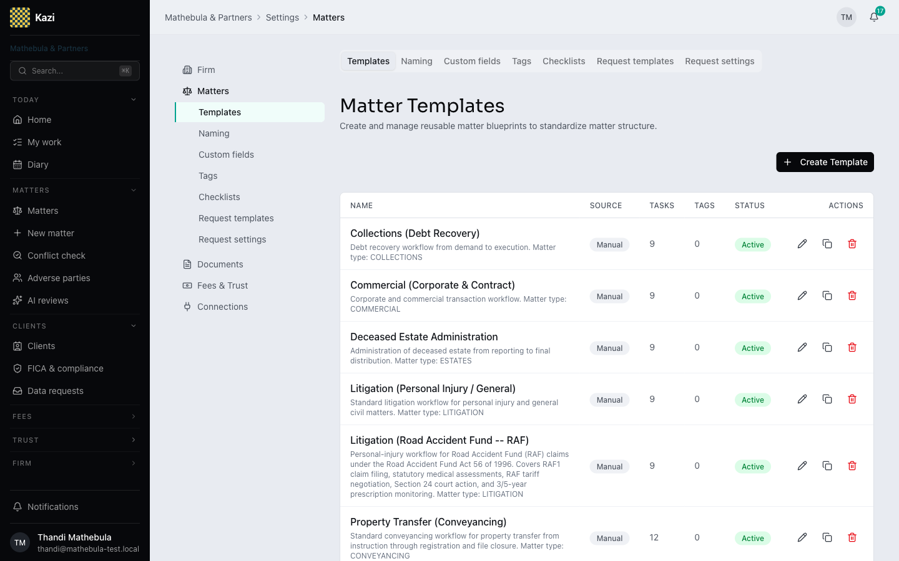
Matters
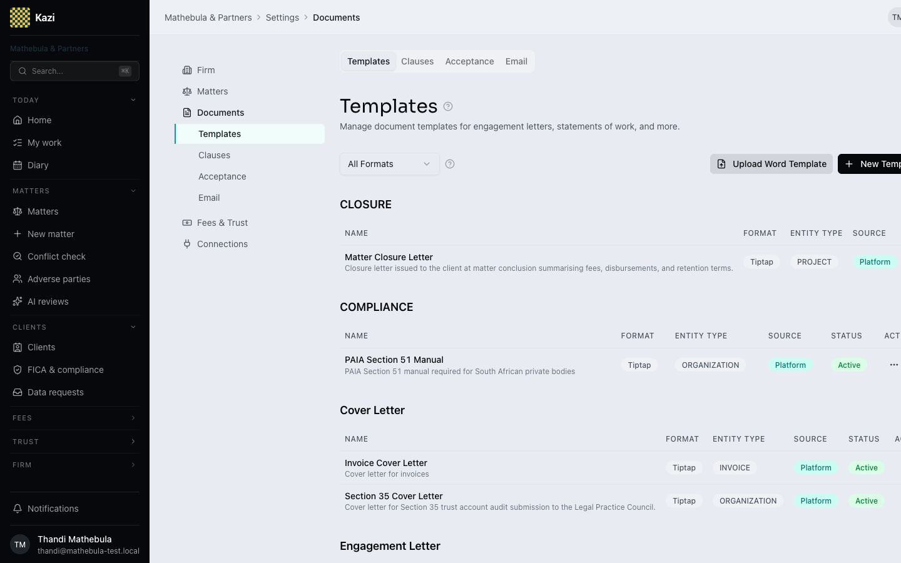
Documents
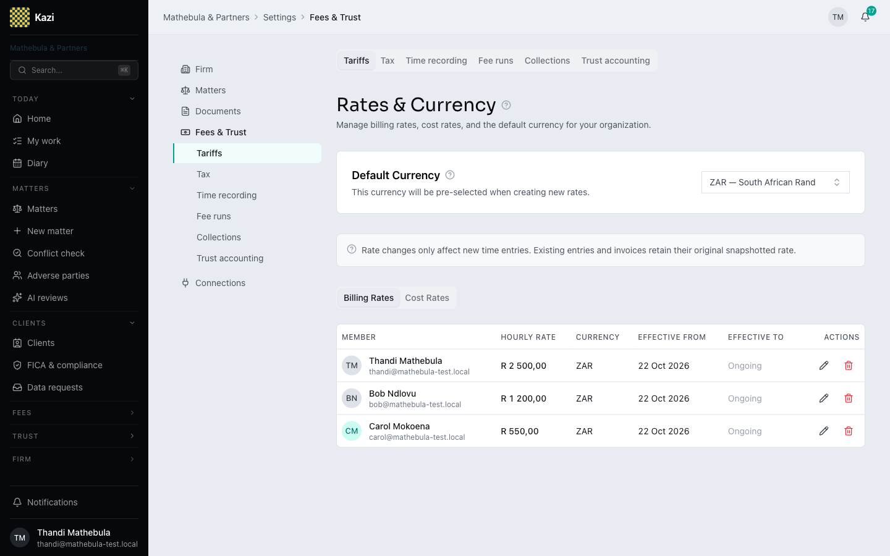
Fees & Trust
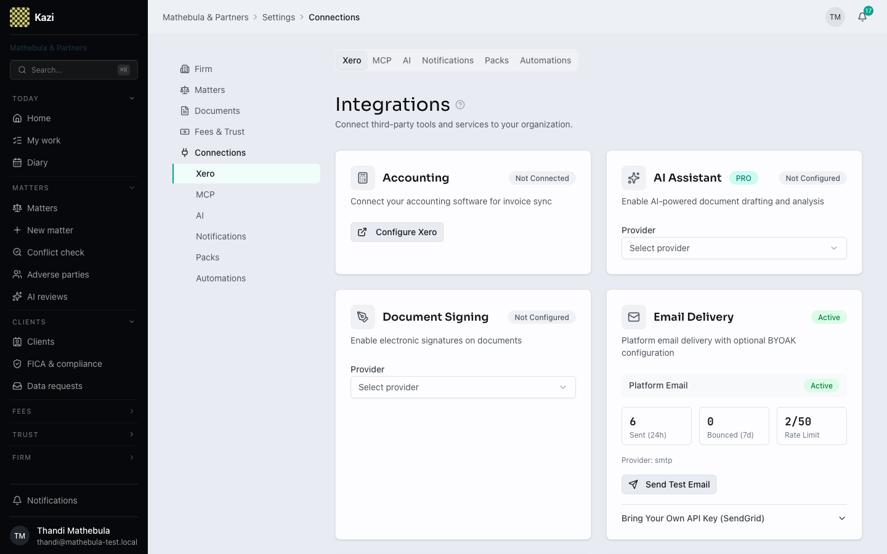
Connections
Compliance
Trust accounting you can defend
Approval-gated payments
No money leaves trust without an explicit, recorded approval.
Immutable audit trail
Every entry, every change, every actor — recorded and unchangeable.
Three-way reconciliation
Bank ↔ cashbook ↔ client ledgers, held continuously — not once a month in Excel.
Auditor-ready
When your auditor arrives, the file is a download, not a scramble.
Live demo
The part nobody else has
Point your own AI at your practice — grounded in your firm's real data.
Draft the month's fee notes from unbilled timeScreen the trust account against s86Check a client's FICA gaps & draft the requestFile an email into the right matter
The AI drafts. A human approves — inside Kazi. Your data, your AI, your approval.
Migration
Switching is our job, not yours
You provide exports — GhostPractice, AJS, Lexpro, or your bookkeeper's spreadsheets. CSV is fine.
We migrate your clients, open matters, debtor balances, and trust balances.
The trust take-on is auditor-defensible: nothing commits until client balances tie to your bank balance at cutover — to the cent.
You receive a full take-on report for your records and your auditor.
Continuity
Your data is always yours
01
Full export, any time
By you, from the product — clients, matters, documents, ledgers. Built, not promised.
02
Documented take-off path
If you leave, you leave with everything, in usable formats.
03
Exit clause in writing
Written into the pilot agreement. You should stay because it's good — not because you're stuck.
The offer
The design-partner pilot
Free for six months — full product, no feature holdbacks.
Founder-run take-on and onboarding — I move your data personally.
Runs in parallel with your current system — no burned bridges.
Full export + exit clause if you walk away.
Two to three firms only — each gets white-glove treatment.
In return
What we ask
30 minutes of feedback a week — you shape what gets built next.
A reference at launch — with your approval, when it's earned.
After the pilot: a flat firm-level fee — R2,500–R5,000/month by firm size. Unlimited users. No per-seat pricing.
Next step
Live within weeks
1 · One hour with your bookkeeper + sample exports2 · We confirm the migration plan3 · Pilot letter4 · You're live